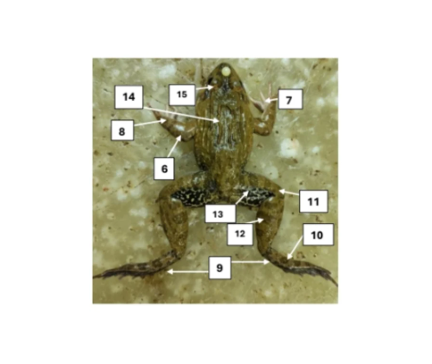

Rana sp.
Katak jantan umumnya memiliki ukuran tubuh yang lebih kecil dibandingkan katak betina, namun mereka diberkahi dengan karakteristik unik untuk menarik perhatian pasangan. Ciri paling khas dari katak jantan adalah adanya kantung suara (vocal sac) di bagian tenggorokan yang dapat mengembang seperti balon untuk menghasilkan suara derikan yang nyaring selama musim kawin. Selain itu, banyak spesies katak jantan yang mengembangkan bantalan kawin (nuptial pads) berupa tonjolan kasar atau kapalan pada ibu jari kaki depannya, yang berfungsi untuk memeluk dan mencengkeram tubuh betina dengan kuat saat proses reproduksi (amplexus).
Katak mewakili kelas Amphibia, kelompok vertebrata transisi antara kehidupan akuatik dan daratan. Spesimen diamati untuk menelusuri adaptasi ganda pada sistem integumen dan pernapasan, serta jantung tiga ruang yang menjadi ciri khas sirkulasi amfibi.
Pengamatan bentuk tubuh dan struktur luar katak jantan sebelum dibedah, meliputi bagian kepala, badan, serta perkembangan ekstremitas alat gerak.

Tampak organ dalam rongga tubuh katak jantan hasil pembedahan, menampakkan komponen organ pencewaan, respirasi, kardiovaskular, serta ekskresi.

Deskripsi fungsi masing-masing struktur fisiologis yang teramati pada penelusuran anatomi komparatif spesimen katak jantan.
Bagian ujung kepala yang berfungsi sebagai tempat lubang hidung dan membantu katak dalam mendeteksi bau dari lingkungan sekitar.
Saluran pernapasan bagian luar yang berfungsi sebagai jalan masuk udara ke paru-paru dan sebagai organ penciuman.
Struktur bulat tipis di belakang mata yang berfungsi menangkap dan meneruskan gelombang suara ke telinga dalam.
Segmen pertama tungkai depan yang berfungsi menopang tubuh saat diam dan membantu pergerakan saat melompat.
Sendi penghubung antara lengan atas dan lengan bawah yang memungkinkan gerakan fleksi dan ekstensi pada tungkai depan.
Segmen kedua tungkai depan yang bekerja bersama lengan atas dalam aktivitas bergerak, mendaratkan tubuh, dan ampleksus.
Bagian ujung tungkai depan yang memiliki jari-jari pendek, dilengkapi nuptial pad (bantalan kawin) pada ibu jari khusus katak jantan untuk mencengkeram betina saat ampleksus.
Sendi fleksibel yang menghubungkan lengan bawah dengan tangan, memungkinkan pergerakan dan penyesuaian posisi saat mencengkram.
Tungkai belakang yang panjang dan kuat, berfungsi sebagai alat gerak utama untuk melompat jauh dan berenang dengan efisien.
Sendi penghubung antara tungkai bawah dan kaki yang memberikan fleksibilitas dan daya dorong saat melompat.
Sendi besar pada tungkai belakang yang berfungsi menyimpan dan melepaskan energi secara efisien saat katak melompat.
Segmen tungkai belakang antara lutut dan pergelangan kaki yang berperan dalam memperpanjang jangkauan lompatan.
Segmen paling proksimal tungkai belakang yang memiliki otot-otot besar sebagai sumber tenaga utama lompatan katak.
Lipatan kulit memanjang di sepanjang punggung yang merupakan ciri khas morfologi luar katak dari famili Ranidae.
Kelopak mata ketiga yang transparan, berfungsi melindungi mata saat katak berada di dalam air tanpa menghalangi penglihatan.
Organ pemompa darah yang terdiri dari tiga ruang (dua atrium dan satu ventrikel), berfungsi mengedarkan darah beroksigen dan darah kotor ke seluruh tubuh.
Kelenjar terbesar dalam tubuh katak yang berfungsi menghasilkan empedu untuk pencernaan lemak, menyaring racun dalam darah, serta menyimpan cadangan glikogen.
Organ pernapasan berbentuk kantung tipis berpasangan yang berfungsi menyerap oksigen dari udara dan melepaskan karbon dioksida, bekerja bersama kulit dalam pertukaran gas.
Organ pencernaan yang berfungsi menampung dan mencerna makanan secara kimiawi dengan bantuan asam lambung dan enzim pepsin.
Saluran panjang berkelok yang berfungsi menyerap sari-sari makanan hasil pencernaan untuk kemudian diedarkan ke seluruh tubuh melalui pembuluh darah.
Bagian akhir saluran pencernaan yang berfungsi menyerap sisa air dari ampas makanan sebelum dikeluarkan sebagai feses melalui kloaka.
Kelenjar ganda yang berfungsi menghasilkan enzim pencernaan (lipase, amilase, protease) ke usus halus serta mengatur kadar gula darah melalui hormon insulin.
Organ berbentuk memanjang berwarna kemerahan di sisi punggung yang berfungsi menyaring limbah metabolisme dari darah dan menghasilkan urin untuk dikeluarkan melalui kloaka.
Ruang muara bersama dari sistem pencernaan, sistem urin, dan sistem reproduksi yang berfungsi sebagai saluran keluarnya feses, urin, dan sel sperma pada katak jantan.